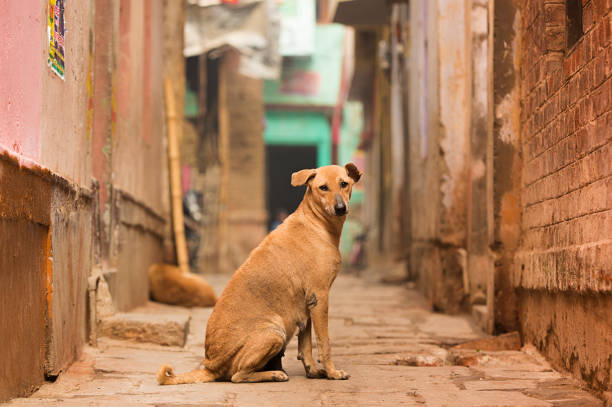

Second Chances And Forever Homes
Mary: Discovered by the roadside with a severe eye infection leading to vision impairment
Following treatment and compassionate care, she has regained her sight.
She loves sun bathing and chasing birds in the garden.
Luigi: Presented with significant parasitic infestation and malnourishment.
Through dedicated medical attention and consistent care, he has made a full recovery.
He now loves jumping and playing with his new friends.
Vidia: Recovered from multiple injuries sustained due to acts of superstition.
She lost one leg but has healed fully.
She developed a notable fondness for flowers, often observed stashing her favorites.
Diego: Rescued from a situation of physical abuse from dog fights,
Diego exhibited signs of trauma and fear.
Through patient rehabilitation he has learned to trust.
He loves cuddles and playing tug with puppies in particular